たまごかけごはんシンポジウムの帰りに鬼の舌震に寄りました。
2023/10/29
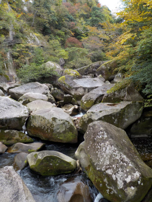
10月末でモミジの紅葉には早いですが、ところどころ秋っぽくなっていました。
ここの場所は今ぐらいが丁度いい景色かなと思いました。
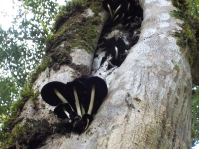
食べれなさそうなキノコが生えてました。
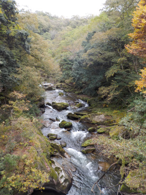
ここも今ぐらいがいいかな。今後落葉がドンドン進みそうです。
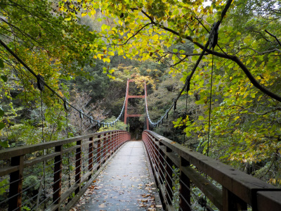
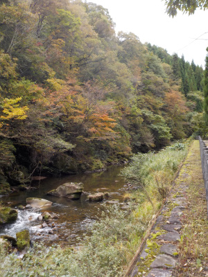
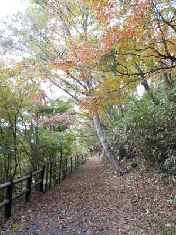
モミジの紅葉はもうちょっと先ですが、その頃には周りの木々の葉はほぼ落ちちゃいます。（もうすでにだいぶ落ちてます。）
どっちを見るかで行く日程を考えた方がいいですね。
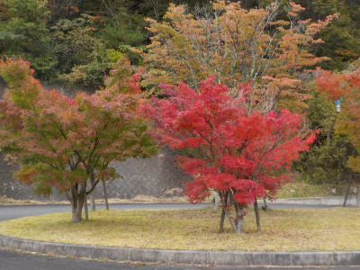
駐車場のモミジが一部真っ赤でした。
町中の公園で見たらキレイって思うんですが、山の中で見るとキモイなって思いました。
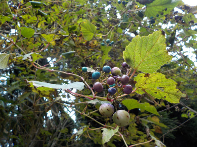
山の中では自然なものを見る方がいいですね。
鬼の舌震はまだ紅葉の途中でした。
2019/11/03
去年は11/18で紅葉後半に見に行ったので、今回は早めの11月前半に見に行きました。
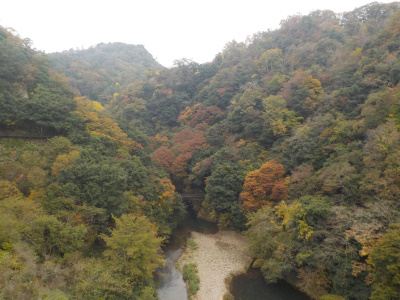
ところどころ紅葉していますね。
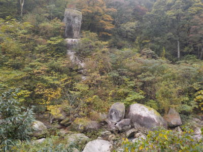
まだ緑が多いです。
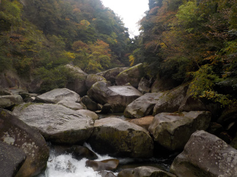
今日は天気が悪かったので全体的に暗いです。
晴れてたら黄色い葉っぱが明るく鮮やかに写ったんじゃないかと思います。
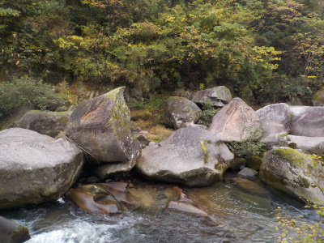
紅葉はいまいちでしたが、鬼の舌震自体の景色は十分いいのでそれなりに楽しめました。
今回動画を撮影しました。
小さい写真より画質がいいし、動きがあるので伝わり易いかな。
設定方法はよく理解していませんが、撮影とアップロードは思ったより簡単でした。
動画はユーチューブに置いてあるので、自分の容量を圧迫しないのでいいですね。
落ち葉の鬼舌震
2018/11/18
紅葉の見頃はもう終わっていますね。
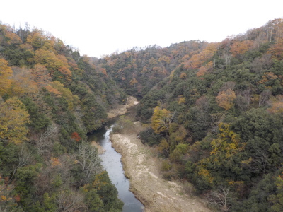
天気も悪かったので、どんよりな色合いでした。
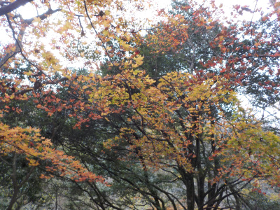
まだ葉っぱが残っている個所もありました。
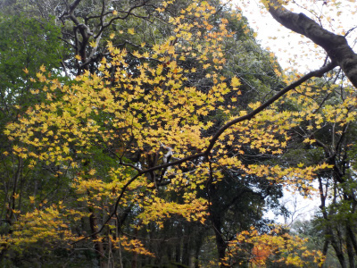
黄色い葉っぱが綺麗でした。
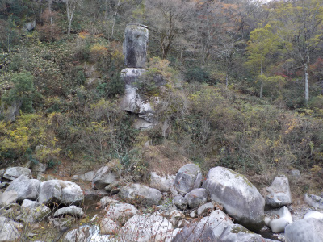
夏場はグリーンで覆われていましたが、だいぶ枯れてますね。
石が見やすくなりました。
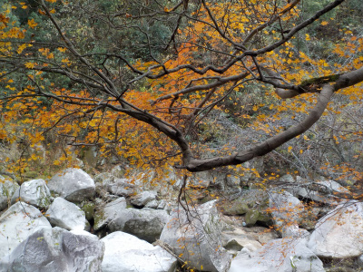
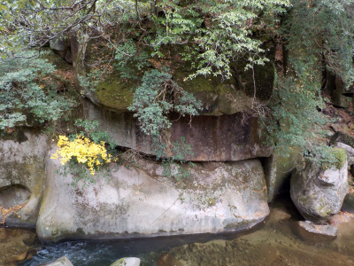
ワンポイントで黄色があって綺麗でした。
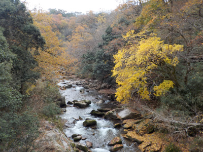
いい眺めでした。
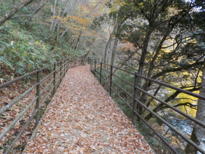
通路は枯葉だらけでした。この葉っぱが付いてた時は綺麗だったんだろうなー。
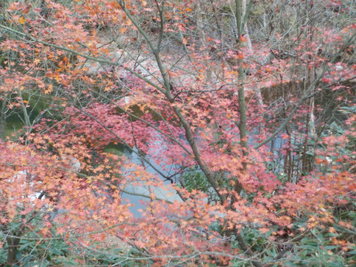
だいぶ葉が落ちてるようですが、まだ綺麗に見えました。
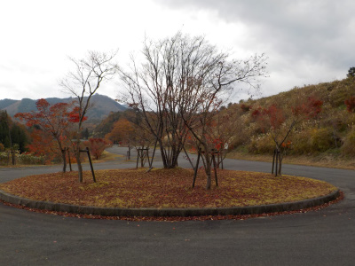
こっちの駐車場には車が止まっていませんでした。
停めるなら売店がある方がいいですよね。
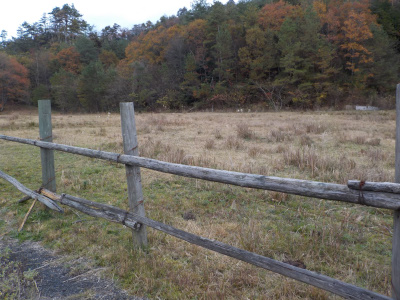
近くに牧場がありました。
見える範囲には動物はいませんでした。
今日は曇り空に枯葉なので、ちょっと寂しげな景色が多かったです。
ここの遊歩道は2キロだそうなので、今日は往復で4キロ歩きました。いい運動になりました。
鬼の舌震は景色がいいけど暑かった。
2018/07/14
吊り橋の上から撮った写真です。
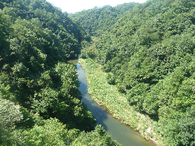
自然だらけでいい眺めです。
これ見れただけで来たかいがあったかもって思いました。
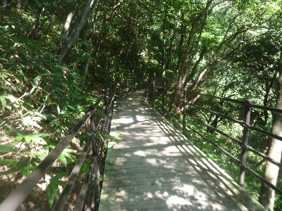
通路は新しく整備されてて、綺麗で歩きやすかったです。山の中でバリアフリーって凄いですね。
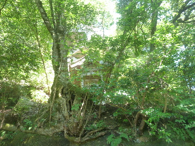
玉日姫の祠です。
鬼の舌振伝説の主役なので見落とさないようにしましょう。
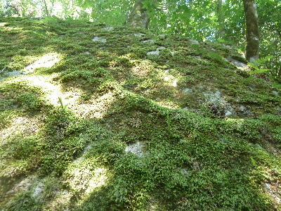
周り中岩だらけなんですが、岩には苔が貼りついていました。
こうゆうの見ると、秘境って感じがします。
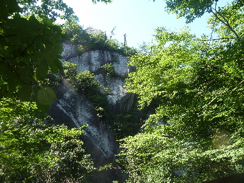
天狗のかっこうの岩です。
写真の撮り方が悪かったのか、あまりそうは見えませんね。
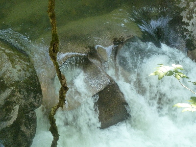
これは人の顔だそうです。
くぼんだとことが目で、真ん中の出っ張ったところが鼻です。
カイコツっぽいですね。
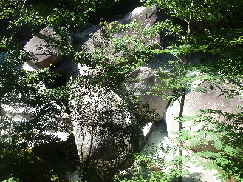
ここらへんは岩だらけで、水は岩の下を流れています。
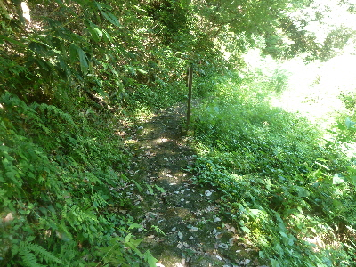
バリアフリーじゃないワイルドな道も歩けます。
こっちの方が水に近いです。体力のある人は両方歩くといいと思います。
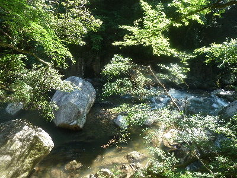
ゴツゴツした巨石が少なくなると、清流が見えてきます。
水が近いので涼しそうですが、今日は風が少なくとても暑かったです。
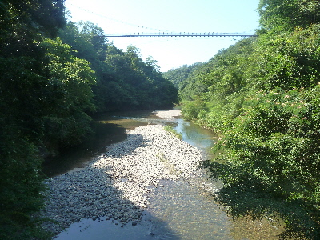
最初に撮った写真はあの橋の上からです。
写真の反対側はこんな感じです。
こっちもいい眺めです。
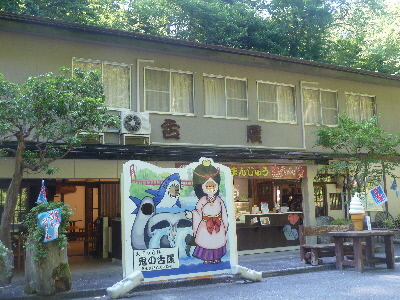
疲れたので舌振亭で休憩して帰りました。
ジュースとかき氷で渇きを癒しました。
他に販売したてんですが、暖かいものは春とか秋に来て食べたいと思いました。